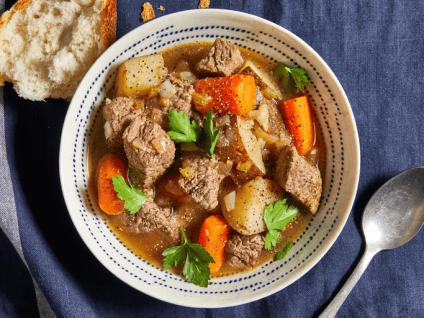

Slow Cooker Beef Stew

Description
Time makes everything taste great!If you like comfort food
and have patient, this meaty stew will be your type!
Ingredients:
- 2 pounds beef stew meat, cut into 1-inch pieces
- ¼ cup all-purpose flour
- ½ teaspoon salt
- ½ teaspoon ground black pepper
- 1½ cups beef broth
- 4 medium carrots, sliced
- 3 medium potatoes, diced
- 1 medium onion, chopped
- 1 stalk celery, chopped
- 1 teaspoon worcestershire sauce
- 1 teaspoon ground paprika
- 1 clove garlic, minced
- 1 large bay leaf
Steps:
- Gather all ingredients.
- Place beef in the clow cooker.
- Mix flour, salt, and pepper together in a small bowl;
pour over beef and stir until coated.
- Add beef broth, carrots, potatoes, onion, celery, Worcestershire sauce, paprika, garlic, and bay leave;
stir to combine.
- Cover, and cook until beef is tender enough to cut with a spoon, on Low for 8 to 12 hours, or on High for 4 to 6 hours.
- Serve hot and enjoy!